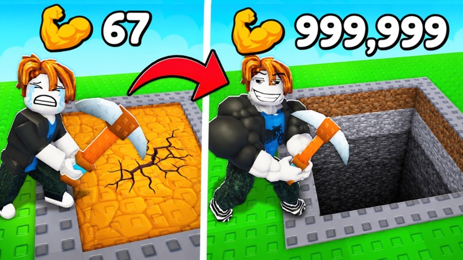

+1 Mine Per Click Beginner's Guide
Last updated: July 3, 2026
+1 Mine Per Click looks like a pure clicker, but it's really a loop of four resources feeding each other: Strength → depth → loot → Cash → back into Strength. Understand the loop and every session gets more efficient. Here's how each piece works and what to prioritize early.
The loop, step by step
1. Train Strength
Strength is your foundation stat — it controls how hard each swing hits. Everything downstream (how fast you break blocks, how deep you can realistically push) scales off it. Early on, raw clicking to train Strength is the biggest lever you have, and it's also what accumulates while you're offline.

2. Mine down
The mine is layered: blocks get tougher as you descend, and the loot gets better to match. Depth is the game's real progress bar — the developer's stated end goal is to reach the bottom. If your swings start feeling weak for the layer you're on, that's the game telling you to go train Strength or upgrade your pickaxe before pushing further.
3. Collect loot and sell it
Ores and loot are worthless in your inventory — Cash only happens when you sell. Build the habit of selling before you log off, so your next session starts with spendable Cash on top of whatever accumulated offline.
4. Upgrade your pickaxe
Cash's main job is pickaxe upgrades. A better pickaxe mines faster, which means more loot per minute, which means more Cash — this is the compounding engine of the game. When in doubt about what to spend on, the pickaxe is rarely the wrong answer.
5. Rebirth
Eventually progress per session stalls and rebirth becomes worth more than pushing on. That decision has its own page: when to rebirth.
Use offline earnings properly
The game grants Strength and Cash while you're offline — it's advertised right in the game description, and it changes how you should play:
- Short sessions beat marathon sessions. Log in, sell, spend the accumulated Cash on upgrades, push a little deeper, log out. The game keeps working for you.
- Always spend before logging off. Cash sitting unspent overnight is compounding you didn't collect — convert it into pickaxe levels first.
Common beginner mistakes
- Hoarding loot instead of selling. Loot doesn't appreciate. Sell it, spend it.
- Pushing depth with an underleveled pickaxe. If a layer takes many swings per block, you're wasting time — upgrade first, the layer will still be there.
- Typing in codes from random lists. There's no confirmed code system in this game — those lists are for a different game. Details on the codes page.
- Fighting crowds on public servers. Servers cap at 20 players and busy hours get contested. Private servers are free — use one.